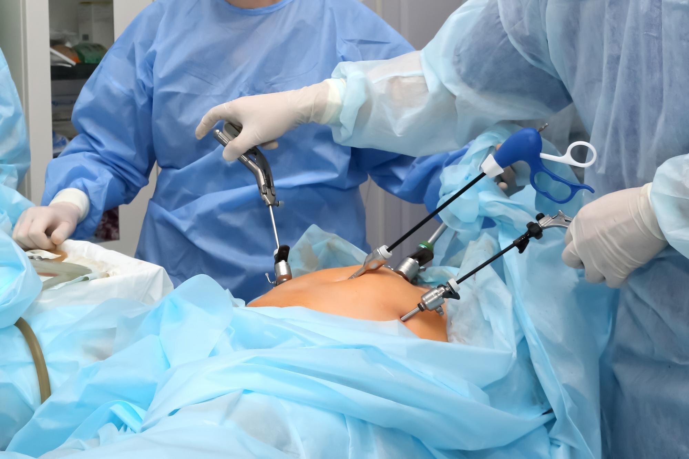

Gallstone Surgery Options at Rashtrotthana Hospital, Bangalore
Our experienced general and laparoscopic surgeons assess your condition, overall health and gallstone severity to recommend the most appropriate surgical approach for you.
Laparoscopic Cholecystectomy
The gold standard for gallstone removal - performed through 3–4 small keyhole incisions using a laparoscope and HD camera. The gallbladder is removed entirely, eliminating the source of stones with minimal trauma. Same-day or next-day discharge with return to normal activity in 5–7 days.

Open Cholecystectomy
In cases of severely inflamed gallbladders, acute cholecystitis or bile duct complications where laparoscopy is not feasible, open cholecystectomy provides direct surgical access for complete and safe gallbladder removal.